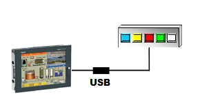

|
|
|
|
|
|
|
|
The Illuminated Switch is an external hardware device that consists of five momentary switches with multi-colored LED lamps.
You can design an illuminated switch as a global switch to monitor and control activities on your target machine. By using an illuminated switch, you do not need to browse to a specific touch panel on your target machine to perform an action. For example, you can set up an illuminated switch to monitor the status of an alarm group without changing the target machine's touch panel. Similarly, you can set the illuminated switch to change a variable to a pre-defined value, switch between panels, link to a function key, or assign lamp colors to alarm states.
For a complete list of illuminated switch features, see Section 24.8.2, Setting Up the Illuminated Switch.

The following table describes the illuminated switch lamps:
|
Illuminated Switch Lamp |
Description |
|
Color |
Select the lamp color: Blue, Green, Orange, Red, White, Yellow. |
|
Blink |
Select the blink speed: Fast, Medium, Slow. |
|
Dim |
Select to dim the lamp to lower brightness. |
|
|
|
UNINTENDED EQUIPMENT OPERATION When you connect one or more USB devices to a target machine via a USB hub, you must use a USB hub with external power supply. Failure to follow these instructions can result in death, serious injury, or equipment damage. |
To connect to the illuminated switch, you need a USB cable with a Type B connector.

An Illuminated Switch that is connected to a powered USB hub may appear to function normally even if it is disconnected from the target machine. Please check the target machine's System Event Log to verify the Illuminated Switch connectivity.
Not all target machines support the illuminated switch. For a list of supported target machines, see Appendix 5, Hardware Specifications.
You can connect only one illuminated switch to the target machine.